Navigate to the blog
Mysore – Multiple cycle troubles, bee sting and a lot of peddling My First Long Distance Cycling ExperienceMysore, a place about 150kms from Bangalore. It is a blend of historic nostalgia and an urban touch. It is a nice place to be offseason to admire the true beauty of the city. But unfortunately, we had to be there for the long weekend and there were a hell lot of people on the streets of Mysore palace.
Background: Gang of 4 cyclists, a bunch of newbies excited about cycling long distance. We chose Mysore which is approximately 150Kms from Bangalore because there was only 3 days to ride. One day to go, one day to roam in Mysore and another to come back.
The Plan: The trip lasted just 3 days. One day’s intense ride of 150Kms followed by a nominal local ride which would not be that long. The last day to come back which would also be around 150Kms. The local plan was not fixed. We planned to go there and decide, we ended up going to Srirangapattana, KRS dam, Chamundi Hills, and Mysore Palace.
The Trip: We started off by 7:00 AM from Vijaynagar, just like any other ride, the starting was smooth as silk. Stopped at Bidadi to have breakfast. After breakfast and a lil rest, we resumed the trip. Now that the traffic was less once we were in the outskirts of Bangalore. We started to increase speed. Then there was a time where we lost each other, and I thought I could take a video.
After a while, we came across a lake. It was muddy but yeah, it was wonderful. Then came the first cycle trouble, one of our rider’s peddle came off. We had to do a temporary fix as we didn’t have the appropriate Allen key. From there on the peddling got a little slower. Later, it was fixed and we resumed cycling at a regular pace.
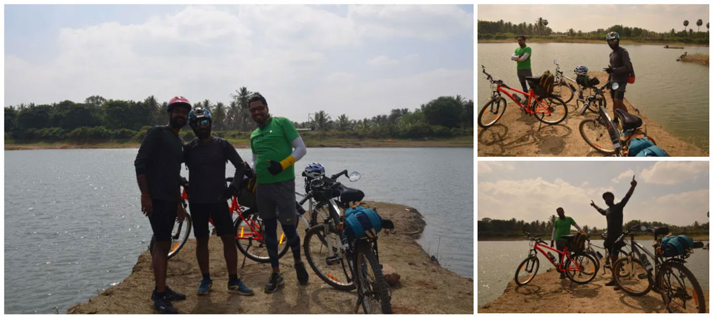Then we stopped for lunch. Lunch was not that great. Can’t help it…… we were not localities and din have any patience to ask for a review as we were starving. Ate and left with a bit of sadness. After a while, we reached Srirangapattana. So the town was wonderful and we wanted to roam around cycled to see a couple monuments within Srirangapattana.
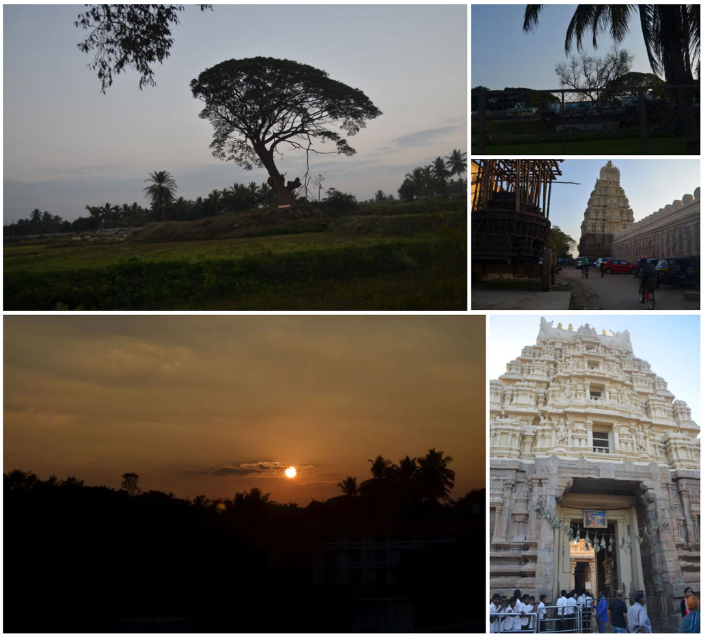After Srirangapattana, we headed to KRS. Then came the real trouble, the other member’s cycle chain got jammed to the derailleur and he was unable to continue peddling. So, we thought we could call it a day and think about the remaining trip. We got a room in a lodge near KRS dam and rested and thought of getting the cycle shipped to Bangalore with only 3 of us remaining to continue the trip.
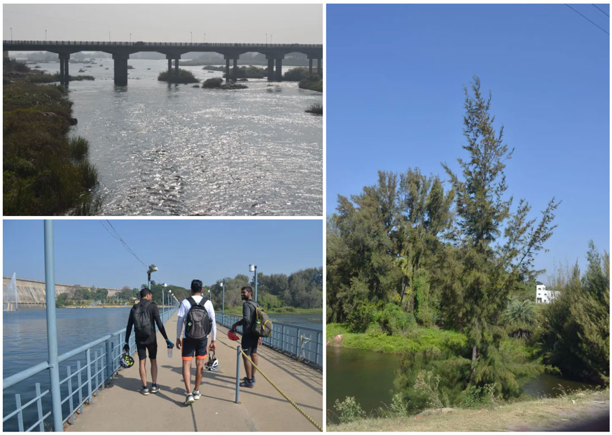Day2: A new day, we started walking towards KRS dam. The view was lovely it was green on either side of the road. Paddy fields, river running, cattle and lush green trees. We went to the KRS dam, roamed around and on the way back, had breakfast. Then, started to walk towards the place where we parked our cycles. Got the other member an auto to get his cycle back home. Then resumed our trip to start the best part of the trip.
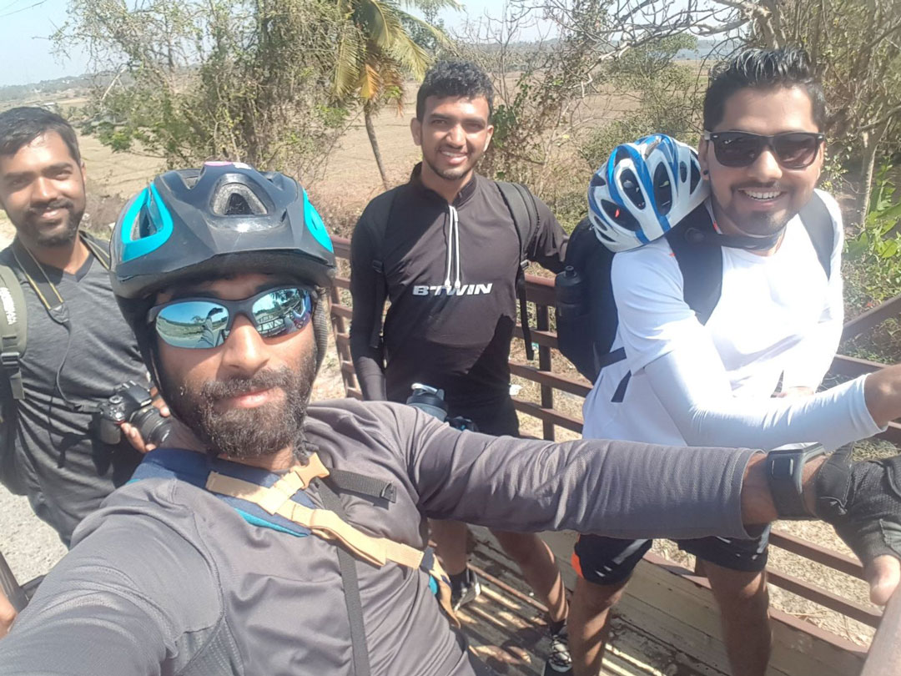So, the best part of the trip was to go up a 3.5-thousand-foot-high hill. The initial part of the trek was a very steep rise, was cycling at only between 4 to 5 km/hr, after covering about 2 to 3 kms there was a slight reduction in the raise and we were able to go a little faster with a lesser effort.
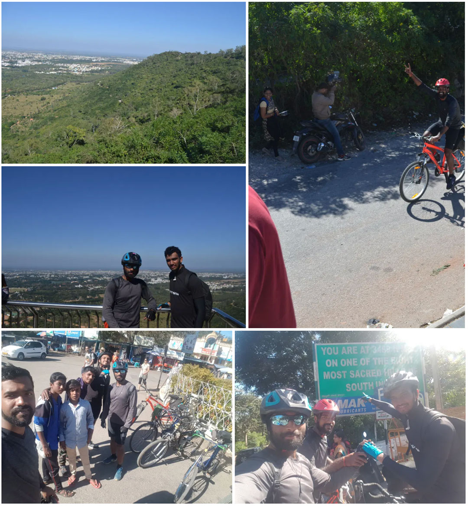Downhill was a wonderful ride, just guiding the handle towards the right direction like it was paragliding until there was another incident. I got multiple stings by a couple of honey bees. We stopped to see if the stings were serious. One of my buddies was able to pull the bee sting out and the thorn was about a centimeter long. I was a little paranoid, but nothing to worry. Until I found that the swelling was reduced the next day.
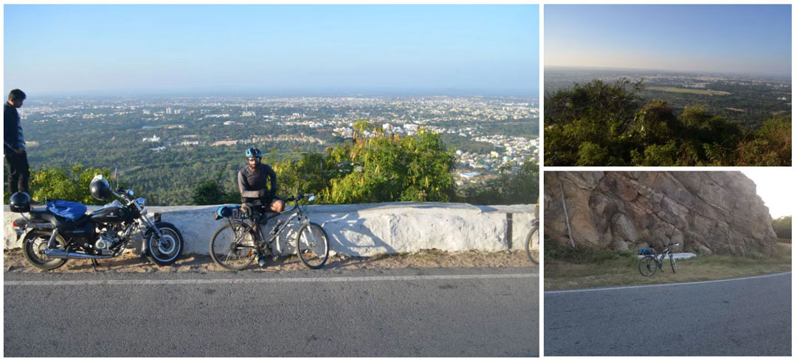By the time we came down the hill to the mighty Mysore palace it was dark and there were too many people in the queue to get in. So, we just parked our cycles outside the palace and took a few pics to rejoice and started scouting for a place to sleep that night. Finally, we were able to find a good deal and a place to stay and once we put everything in place and got a place to park our cycles we left to have dinner. Had a good dinner in a local restaurant. The best food in the entire trip.
Day 3: we were reduced to 2 people because the other rider wanted to continue his ride since he had a few more days off. We started off in the morning to return to Bangalore. He continued his ride and had plans to reach Goa. Since it was just the 2 of us and we were following the same path we had come, we didn’t have any places to stop and admire the beauty. We had a couple stops to have breakfast, a small snack and lunch. We reached outskirts of Bangalore by late evening. Then we parted ways to reach each other’s homes.
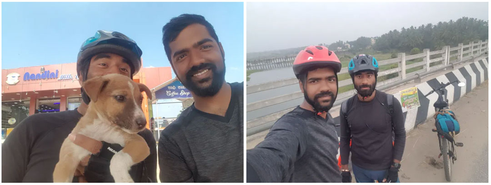On a whole, it was a wonderful trip with a little bitter experience here and there.
The Team:
Praveen Kumar Rai: His first long ride, a very good athlete. Never gets exhausted…. Never. Has been cycling for the past 2 weeks just to warm up and give the leg muscles a glimpse of what is to be expected in the coming few days. The person who got his peddle off.
Sharath: His first long ride as well but has been riding cycle for quite some time. Owner of a wonderful road bike (most expensive of us all). The person who went on to complete the Goa trip.
Krishna: My fourth ride, I’ve been cycling for close to 2 years, but this is just my fourth long distance ride. The person who got bee stings.
Srikanth: His seventh long ride. Has been cycling for quite some time. The unfortunate chap who had to get the cycle transported.
From: Bangalore
To: Dandiganahalli Dam
Distance: 84KMs one way
Mode: Cycle
No. of Travellers: 1 (Solo)
My first “one of a kind” long distance cycling. Had not really been fully prepared to go, but just left thinking I will make it anyway. I left at 10 in the morning, yes it seems a bit late to start a cycle ride. It’s not that important but, maybe I’ll have a place to tell why I started my trip late later.
First let me clarify why I chose this infamous place to cycle to. Just like every other person, I too googled for some place to cycle. The results were just boring and seemed like the places I’ve visited already or heard someone visited by other mode of transport. I wanted it to be a ride to enjoy. The destination was not as important as the trip itself. So, I looked for some water place thinking it would be filled with greenery around. Looked for dams around Bangalore and stumbled upon a few places around the distance I was happy enough to think about cycling. There were more than a couple of them so, I chose Dandiganahalli Dam which was approximately 80Kms from my home.
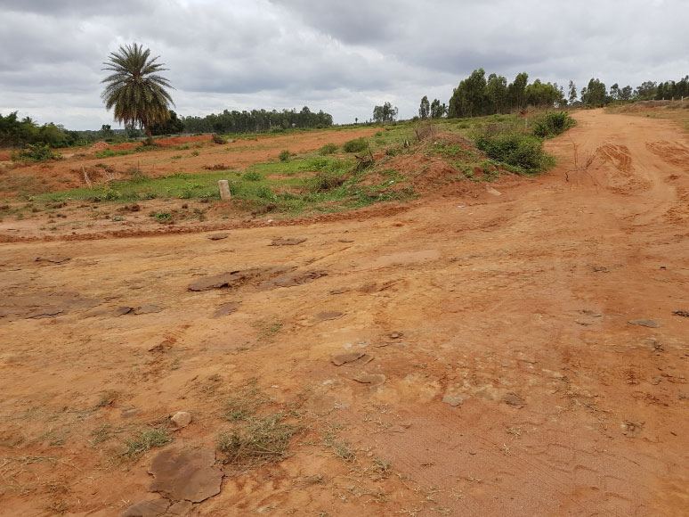 Continued cycling till I reached a section of the airport road and started to take a non-highway route. This was to avoid the route I’ve travelled and it’s a lot less monotony in the view. Went through a lot of villages on the way, it was a classic country ride. A lot like the ones in the movies. Most of the roads were just a dirt street. No tar, it was just a dirt road. I was alone and it was silent. Just sounds of come birds chirping and breeze hitting the bushes and it’s leaves buzzing.
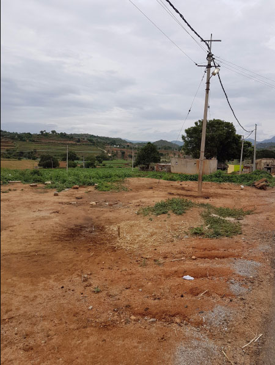
It was about 60Kms down and everything was going on smooth, I reached a certain village where the roads were tiny and looked like a mountain may be about a 30° Elevation. when I thought of standing for pedalling, I felt the pain in my thighs, for the first time in the trip. I had to push it for about 200 meters. Once that was done, it was more plains and my comfy trip continued.
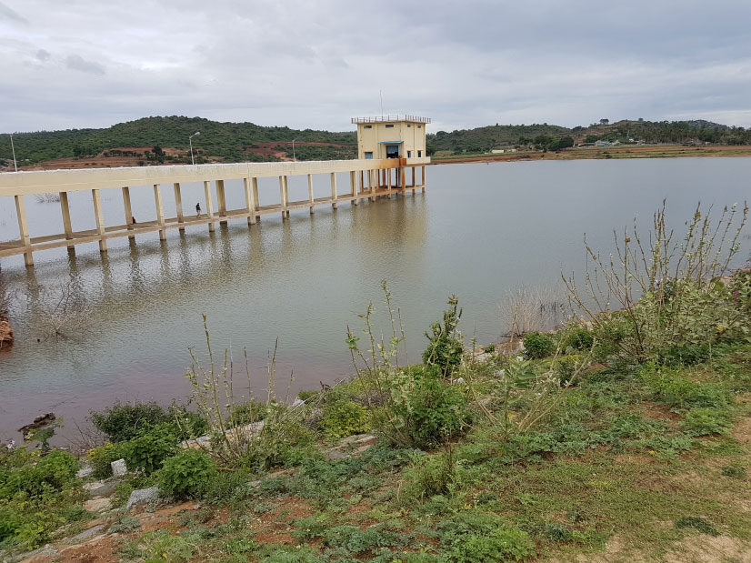
Then there was a lake on the way, when I was about 70kms down. It was “Nallakadirenahalli” ( got to know the place’s name while writing the blog). this was not on the agenda nor on the google maps which I followed till a point. The view was amazing. Lake, green mountain, agricultural fields around it. It had everything a person (or at least me) would love to see in nature. I thought of ending the trip and returning as I loved the spot very much and it was 3 already. Took a few pictures so that I could recall just in case these visual spectacular erases in my memories later. But, I wanted to continue anyway because I might not come in the same path later, and would never get to Dandiganahalli Dam. I must admit I loved the pictures of it and that pushed me to go further.
Resuming the trip from “Nallakadirenahalli” I thought of taking a far more adventurous route this time. The thought was worth it! The view was even more intriguing.
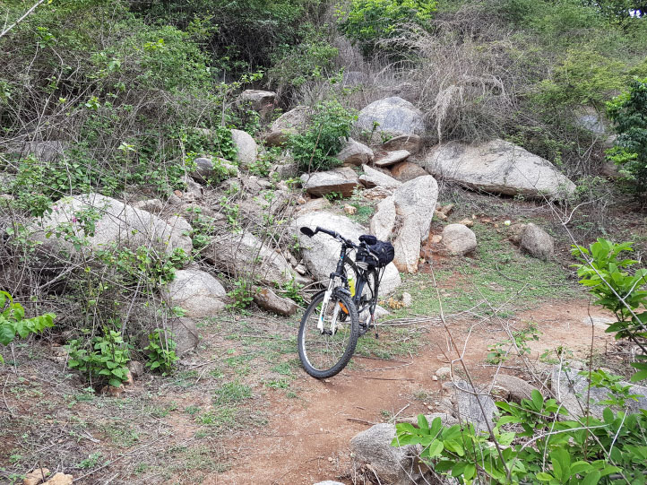 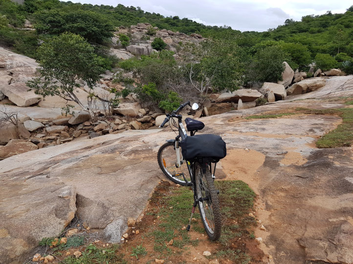
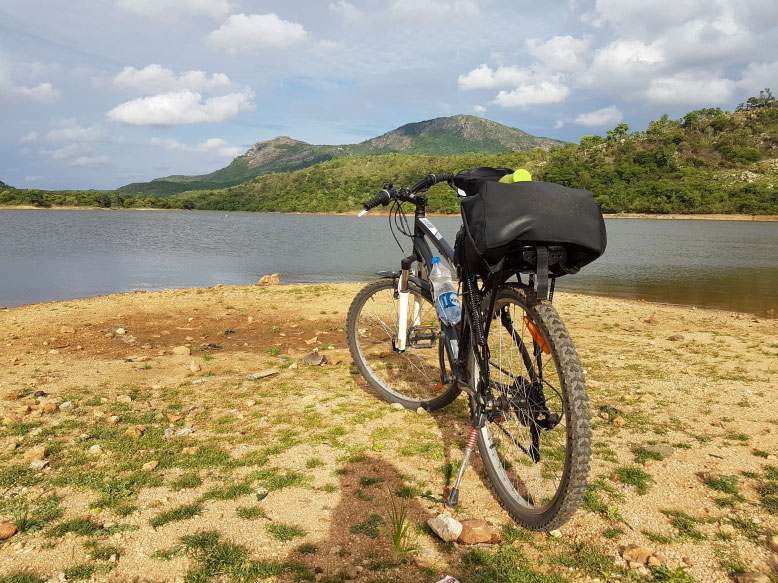
Continued cycling till I reached a section of the airport road and started to take a non-highway route. This was to avoid the route I’ve travelled and it’s a lot less monotony in the view. Went through a lot of villages on the way, it was a classic country ride. A lot like the ones in the movies. Most of the roads were just a dirt street. No tar, it was just a dirt road. I was alone and it was silent. Just sounds of come birds chirping and breeze hitting the bushes and it’s leaves buzzing.
Took a little break. May be 15 to 20 mins. And returned my return journey was not that pleasant as it was dark and I took the highway route as my mobile was running out of charge and I did not have any other source of route guidance. I could not afford to get lost because I promised I would be at a friend’s place for dinner by the time I reached Bangalore it was almost 12. So the entire trip was around 14 hours which included about an hour’s cycle fixes.